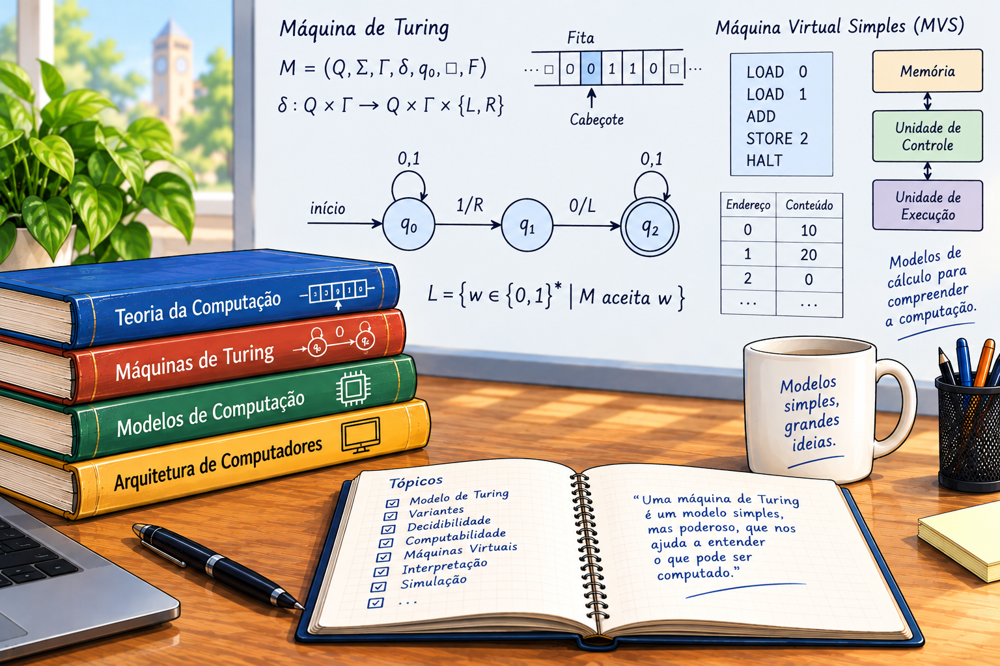
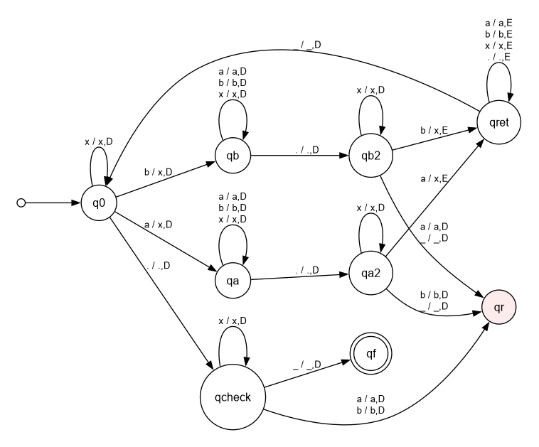
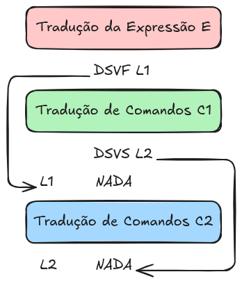
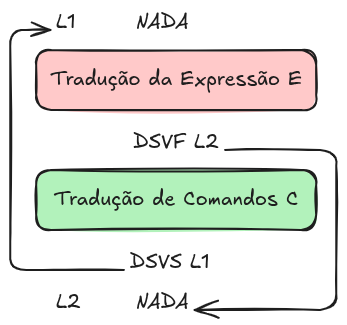

6 A Máquina de Turing e as Máquinas Virtuais

Até este ponto, foram apresentados os principais conceitos relacionados às linguagens formais, aos autômatos e aos mecanismos utilizados no reconhecimento e na análise de programas. Neste capítulo, o foco desloca-se do reconhecimento de linguagens para a execução de computações. Para isso, serão estudados diferentes modelos de máquina, estabelecendo uma relação entre os modelos teóricos da computação e os mecanismos utilizados na implementação de linguagens de programação.
A ideia de uma máquina é fundamental para a Ciência da Computação. Uma máquina pode ser entendida, de maneira abstrata, como um dispositivo capaz de receber uma entrada, executar uma sequência de operações de acordo com regras bem definidas e produzir um resultado. Dependendo do modelo adotado, a máquina pode possuir diferentes formas de memória, mecanismos de controle e operações. Essa abstração permite estudar a computação independentemente dos detalhes de uma implementação específica.
Inicialmente, será apresentada a Máquina de Turing, um dos modelos matemáticos mais importantes para o estudo da computabilidade. A Máquina de Turing possui uma estrutura bastante simples, constituída essencialmente por uma fita que funciona como memória, um cabeçote de leitura e escrita e um conjunto finito de estados. Apesar de sua simplicidade, esse modelo é suficientemente poderoso para representar uma ampla classe de processos computacionais. Além de permitir a definição formal de computação, a Máquina de Turing fornece uma base para a compreensão dos limites do que pode ou não ser computado por um algoritmo.
A apresentação da Máquina de Turing também permitirá retomar conceitos importantes estudados anteriormente, como estado, configuração, função de transição e computação, agora sob a perspectiva de um modelo de máquina capaz de modificar sua memória durante a execução. A noção de configuração instantânea será particularmente importante, pois permite descrever passo a passo a evolução de uma computação.
Embora a Máquina de Turing seja extremamente útil como modelo teórico, ela não corresponde diretamente ao ambiente no qual programas reais são executados. Para aproximar os conceitos estudados de uma implementação de compiladores, será introduzido, na sequência, um segundo modelo: uma máquina virtual.
A máquina virtual será definida como uma máquina abstrata projetada para executar o código intermediário produzido pelo compilador. Em vez de executar diretamente as instruções da arquitetura física de um computador, o programa será executado sobre um conjunto de instruções, uma memória e mecanismos de controle definidos pelo próprio modelo virtual. Dessa forma, a máquina virtual estabelece uma camada intermediária entre o código gerado pelo compilador e o hardware responsável pela execução.
Essa abordagem permite separar duas questões que, em uma máquina física, estão fortemente relacionadas: o que deve ser executado e como essa execução é realizada pelo hardware. O compilador pode, assim, gerar código para uma arquitetura virtual bem definida, enquanto o ambiente de execução se encarrega de interpretar ou executar essas instruções.
Será apresentado também o ambiente virtual de execução, responsável por manter o estado da máquina durante a execução de um programa. Nesse ambiente serão definidos os elementos necessários para a execução do código intermediário, como memória, pilha de execução, registradores ou estruturas equivalentes, instruções e mecanismos de controle do fluxo de execução. A execução será descrita por meio de configurações da máquina, permitindo acompanhar a evolução do programa instrução por instrução.
A escolha de uma máquina virtual como destino da geração de código estabelece uma ligação direta com os conteúdos de compilação apresentados nos capítulos anteriores. O compilador deixa de ter como objetivo imediato a geração de instruções para um processador específico e passa a produzir um código intermediário, definido em termos das operações da máquina virtual. Posteriormente, esse código pode ser interpretado pelo ambiente virtual ou traduzido para uma arquitetura física.
Assim, o capítulo estabelece uma ponte entre três níveis de abstração. No primeiro nível está o modelo teórico de computação, representado pela Máquina de Turing; no segundo, a máquina virtual, que fornece um modelo abstrato de execução adequado à implementação de compiladores; e, no terceiro, o hardware real, responsável pela execução efetiva das instruções.
Essa perspectiva é importante para compreender que um compilador não apenas traduz uma linguagem para outra. Ele também realiza uma transformação entre diferentes modelos de execução. Ao gerar código intermediário, o compilador transforma a representação do programa obtida nas fases anteriores em uma sequência de operações que pode ser executada por uma máquina abstrata. A partir dessa representação, torna-se possível estudar de maneira concreta a relação entre a análise do programa, a geração de código e sua execução.
Ao longo do capítulo, os exemplos e simuladores serão utilizados para tornar esse processo observável. A execução poderá ser acompanhada por meio das configurações instantâneas da máquina, permitindo visualizar as alterações de estado e memória produzidas por cada instrução. Dessa maneira, conceitos que frequentemente são apresentados de forma abstrata — como estado, memória, pilha, instrução, chamada de procedimento e fluxo de execução — poderão ser explorados de maneira interativa.
O objetivo, portanto, é construir gradualmente uma visão unificada da computação: partindo de um modelo matemático extremamente simples, a Máquina de Turing, e avançando até um modelo de máquina virtual suficientemente estruturado para servir como destino da geração de código de um compilador. Essa transição permitirá conectar os fundamentos teóricos da computação aos mecanismos práticos envolvidos na execução de programas.
6.1 A Máquina de Turing
Nos capítulos anteriores foram apresentados diferentes modelos de computação. Os autômatos finitos constituem modelos adequados para o reconhecimento de linguagens regulares e para problemas nos quais a quantidade de memória disponível é limitada. Os autômatos com pilha ampliam essa capacidade ao incorporar uma memória potencialmente ilimitada organizada segundo o princípio de que o último elemento armazenado é o primeiro a ser recuperado. Apesar dessas extensões, existem problemas que não podem ser resolvidos por esses modelos. Torna-se necessário, portanto, considerar um modelo de computação mais geral, capaz de representar uma classe muito mais ampla de processos computacionais.
A Máquina de Turing foi proposta por Alan Turing em 1936 como um modelo matemático para a realização de computações. Sua importância não está apenas em sua capacidade de reconhecer linguagens mais complexas, mas também no fato de fornecer uma definição formal para o conceito de computação. Embora seja constituída por elementos extremamente simples, a Máquina de Turing possui recursos suficientes para representar os procedimentos realizados por um computador de propósito geral.
Uma Máquina de Turing pode ser vista como uma extensão dos modelos de autômatos estudados anteriormente. Assim como um autômato finito, ela possui um conjunto finito de estados e um mecanismo de controle baseado em uma função de transição. A diferença fundamental está na forma como a memória é utilizada. Enquanto um autômato finito dispõe apenas de sua memória interna, e um autômato com pilha possui uma memória estruturada, a Máquina de Turing utiliza uma fita potencialmente ilimitada que pode ser utilizada tanto para leitura quanto para escrita. Essa característica permite que a máquina armazene informações durante a computação e posteriormente retorne a essas informações para utilizá-las em novas etapas do processamento.
A fita desempenha, portanto, o papel de memória da máquina. Inicialmente, a entrada é armazenada nas primeiras posições da fita, enquanto as demais posições contêm o símbolo branco, representado por \(\sqcup\). Sobre a fita atua um cabeçote de leitura e escrita, que pode ler o símbolo da posição corrente, substituí-lo por outro símbolo e deslocar-se para a esquerda ou para a direita. A possibilidade de modificar a fita durante a execução é uma das características fundamentais que diferenciam a Máquina de Turing dos autômatos apresentados anteriormente.
Durante uma computação, a máquina utiliza a fita não apenas para armazenar a entrada, mas também como memória de trabalho. Informações podem ser marcadas, substituídas ou acrescentadas à fita e posteriormente recuperadas pelo deslocamento do cabeçote até a posição correspondente. Dessa forma, uma Máquina de Turing pode executar algoritmos que exigem uma quantidade arbitrária de memória, limitada apenas pelo tamanho da região da fita efetivamente utilizada durante a computação.
A execução da máquina é determinada pelo estado atual e pelo símbolo que se encontra sob o cabeçote. A partir dessas informações, a função de transição determina três ações: o próximo estado da máquina, o símbolo que deve ser escrito na posição corrente e a direção na qual o cabeçote deve se mover. Uma computação pode prosseguir por um número arbitrário de passos até que a máquina entre em um estado de aceitação ou em um estado de rejeição. Caso nenhum desses estados seja alcançado, a computação pode continuar indefinidamente.
Essa possibilidade de uma computação que nunca termina é uma característica importante da Máquina de Turing. Em particular, uma máquina pode reconhecer uma cadeia pertencente a uma determinada linguagem e também rejeitar uma cadeia que não pertence a ela, mas, dependendo do modelo de máquina e da linguagem considerada, pode existir uma entrada para a qual a máquina nunca chega a uma decisão. Essa distinção será fundamental posteriormente para o estudo da decidibilidade.
Definição formal
Formalmente, uma Máquina de Turing \(M\) pode ser definida como uma 7-upla
\[ M=(Q,\Sigma,\Gamma,\delta,q_0,q_{aceita},q_{rejeita}), \]
em que \(Q\) é um conjunto finito de estados, \(\Sigma\) é o alfabeto de entrada, \(\Gamma\) é o alfabeto da fita, \(\delta\) é a função de transição, \(q_0\) é o estado inicial, \(q_{aceita}\) é o estado de aceitação e \(q_{rejeita}\) é o estado de rejeição.
O conjunto \(Q\) contém todos os estados que podem ser assumidos pela máquina durante sua execução. O estado \(q_0\) representa o estado no qual a máquina inicia a computação. Os estados \(q_{aceita}\) e \(q_{rejeita}\) representam, respectivamente, as duas possíveis decisões finais da máquina.
O alfabeto \(\Sigma\) corresponde aos símbolos que podem aparecer na entrada. O símbolo branco \(\sqcup\) não pertence a esse alfabeto. Já o alfabeto da fita \(\Gamma\) contém todos os símbolos que podem ser utilizados durante a computação, incluindo o símbolo branco e os símbolos do alfabeto de entrada. Assim,
\[ \Sigma \subseteq \Gamma \qquad\text{e}\qquad \sqcup\in\Gamma. \]
A diferença entre os dois alfabetos é importante porque a máquina pode utilizar símbolos que não fazem parte da entrada para armazenar informações auxiliares durante a computação. Por exemplo, pode utilizar um símbolo \(x\) para marcar uma posição da fita que já foi processada.
A função de transição é definida por
\[ \delta:Q\times\Gamma \longrightarrow Q\times\Gamma\times\{E,D\}. \]
Ela especifica o comportamento da máquina em cada passo da computação. Se a máquina estiver no estado \(q\) e o cabeçote estiver sobre uma célula contendo o símbolo \(a\), uma transição
\[ \delta(q,a)=(r,b,E) \]
determina que a máquina deve mudar para o estado \(r\), substituir o símbolo \(a\) pelo símbolo \(b\) e deslocar o cabeçote uma posição para a esquerda. De maneira análoga, uma transição
\[ \delta(q,a)=(r,b,D) \]
determina a escrita de \(b\), a mudança para o estado \(r\) e o deslocamento do cabeçote uma posição para a direita.
Funcionamento de uma Máquina de Turing
Considere uma entrada
\[ w=w_1w_2\ldots w_n\in\Sigma^*. \]
Inicialmente, os símbolos \(w_1,\ldots,w_n\) ocupam as primeiras posições da fita, e as posições seguintes contêm o símbolo branco. O cabeçote começa sobre o primeiro símbolo da entrada e a máquina encontra-se no estado inicial \(q_0\). A partir dessa configuração, a execução ocorre pela aplicação sucessiva da função de transição.
Diferentemente de um autômato finito, o cabeçote da Máquina de Turing pode deslocar-se tanto para a esquerda quanto para a direita. Além disso, os símbolos encontrados na fita podem ser modificados durante a execução. A máquina pode, portanto, percorrer repetidamente uma mesma região da fita, utilizando-a como memória de trabalho.
A computação termina quando a máquina entra em \(q_{aceita}\) ou \(q_{rejeita}\). No primeiro caso, a entrada é aceita; no segundo, a entrada é rejeitada. Se nenhum desses estados for alcançado, a máquina continua sua execução indefinidamente. Essa propriedade distingue uma máquina que simplesmente reconhece uma linguagem de uma máquina que decide uma linguagem.
Configuração instantânea
Para acompanhar uma computação, é necessário representar não apenas o estado atual da máquina, mas também o conteúdo relevante da fita e a posição do cabeçote. Para isso, utiliza-se o conceito de configuração instantânea.
Uma configuração instantânea de uma Máquina de Turing pode ser representada por
\[ \langle u,q,av\rangle, \]
em que:
- \(u\) representa o conteúdo da fita à esquerda do cabeçote;
- \(q\) é o estado atual da máquina;
- \(a\) é o símbolo que está sob o cabeçote;
- \(v\) representa o restante da fita à direita do cabeçote.
Assim, o símbolo que aparece imediatamente após o estado \(q\) é aquele que está sendo lido pelo cabeçote. Por exemplo,
\[ \langle 010,q_4,010\rangle \]
indica que a máquina está no estado \(q_4\), que o cabeçote está sobre o primeiro símbolo \(0\) do terceiro componente e que o conteúdo relevante da fita é formado pelas partes \(010\) e \(010\).
A configuração instantânea permite representar cada passo da computação por meio de uma relação de sucessão, denotada por \(\vdash\).
Considere uma configuração
\[ \langle u,q,av\rangle \]
e suponha que a função de transição determine
\[ \delta(q,a)=(p,b,D). \]
Nesse caso, a máquina está no estado \(q\), lê o símbolo \(a\), escreve \(b\), desloca o cabeçote uma posição para a direita e muda para o estado \(p\). A configuração seguinte será
\[ \langle ub,p,v\rangle. \]
Portanto,
\[ \langle u,q,av\rangle \;\vdash\; \langle ub,p,v\rangle. \]
De forma análoga, considere a transição
\[ \delta(q,a)=(p,b,E). \]
A máquina escreve \(b\), desloca o cabeçote uma posição para a esquerda e muda para o estado \(p\). Se \(u=xc\), isto é, se \(c\) é o último símbolo de \(u\), então a configuração seguinte será
\[ \langle x,p,cbv\rangle. \]
Assim,
\[ \langle xc,q,av\rangle \;\vdash\; \langle x,p,cbv\rangle. \]
Quando o movimento do cabeçote for de permanência, isto é,
\[ \delta(q,a)=(p,b,P), \]
a máquina escreve \(b\), permanece na mesma posição da fita e muda para o estado \(p\). Nesse caso,
\[ \langle u,q,av\rangle \;\vdash\; \langle u,p,bv\rangle. \]
A configuração inicial de uma Máquina de Turing que recebe uma palavra \(w\) como entrada é representada por
\[ \langle \_,q_0,w\rangle, \]
em que \(\_\) representa a parte vazia da fita à esquerda do cabeçote. A partir dessa configuração, cada aplicação da função de transição produz uma nova configuração.
A computação da máquina pode, portanto, ser representada por uma sequência
\[ C_0\vdash C_1\vdash C_2\vdash\cdots\vdash C_k, \]
em que \(C_0\) é a configuração inicial e cada configuração subsequente é obtida pela aplicação de uma transição.
No simulador, essa sequência é apresentada passo a passo. A cada etapa, são exibidos o estado atual, o conteúdo da fita e a posição do cabeçote, permitindo acompanhar visualmente a configuração instantânea correspondente. A transição executada também é destacada no diagrama da máquina, relacionando a representação formal da computação com sua representação gráfica.
Exemplo de Máquina de Turing
Para ilustrar o funcionamento de uma Máquina de Turing, considere a linguagem
\[ L=\{w.w\mid w\in\{a,b\}^*\}. \]
A linguagem contém as cadeias formadas por duas cópias idênticas de uma mesma palavra \(w\), separadas pelo símbolo .. Por exemplo,
\[ ab.ab \]
pertence à linguagem, enquanto
\[ ab.ba \]
não pertence.
Uma Máquina de Turing pode reconhecer essa linguagem utilizando a fita como memória de trabalho. A estratégia consiste em comparar, da esquerda para a direita, os símbolos da primeira ocorrência de \(w\) com os símbolos correspondentes da segunda ocorrência. Para controlar os símbolos que já foram comparados, a máquina pode substituí-los por símbolos auxiliares. Neste exemplo, utilizaremos \(x\) para marcar símbolos \(a\) já processados e \(y\) para marcar símbolos \(b\) já processados.
Inicialmente, a palavra de entrada encontra-se na fita:
\[ ab.ab \]
A máquina procura o primeiro símbolo ainda não marcado antes do separador .. Ao encontrar um \(a\), substitui-o por \(x\) e entra em um estado que indica que deverá procurar um \(a\) correspondente na segunda parte da palavra. De maneira análoga, quando encontra um \(b\), substitui-o por \(x\) e procura um \(b\) correspondente.
Depois de marcar o símbolo escolhido na primeira parte, a máquina percorre a fita até ultrapassar o separador . e procura o primeiro símbolo ainda não marcado na segunda parte. Se esse símbolo for o esperado, ele também é marcado. Caso contrário, a máquina entra no estado de rejeição. Após realizar a comparação, a máquina retorna ao início da primeira parte da fita e repete o procedimento.
A máquina de Turing para essa linguagem pode ser formalmente definida por:
\(M=(Q,\Sigma,\Gamma,\delta,q_0,q_{aceita},q_{rejeita})\),
Onde:
- \(Q = \{q_0, q_a, q_b, q_{a2}, q_{b2}, q_{ret}, q_{check}, q_f, q_r\}\)
- \(\Sigma = \{a,b,.\}\)
- \(\Gamma = \{a,b,.,x,\_\}\)
- \(q_0 = q_0\)
- \(q_{aceita} = q_f\)
- \(q_{rejeita} = q_r\)
- E a função de transição \(\delta\) é:
| Estado | \(a\) | \(b\) | \(x\) | \(\text{.}\) | \(\_\) |
|---|---|---|---|---|---|
| \(q_0\) | \((q_a,x,D)\) | \((q_b,y,D)\) | \((q_0,x,D)\) | \((q_{check},.,D)\) | \((q_{f},\_,D)\) |
| \(q_a\) | \((q_a,a,D)\) | \((q_a,b,D)\) | \((q_a,x,D)\) | \((q_{a2},.,D)\) | — |
| \(q_b\) | \((q_b,a,D)\) | \((q_b,b,D)\) | \((q_b,x,D)\) | \((q_{b2},.,D)\) | — |
| \(q_{a2}\) | \((q_{a2},a,D)\) | \((q_{a2},b,D)\) | \((q_{a2},x,D)\) | \((q_{a2},.,D)\) | — |
| \(q_{b2}\) | \((q_{b2},a,D)\) | \((q_{b2},b,D)\) | \((q_{b2},x,D)\) | \((q_{b2},.,D)\) | — |
| \(q_{ret}\) | \((q_{ret},a,E)\) | \((q_{ret},b,E)\) | \((q_{ret},x,E)\) | \((q_{ret},.,E)\) | — |
| \(q_{check}\) | \((q_{r},a,D)\) | \((q_{r},b,D)\) | \((q_{check},x,D)\) | \((q_{check},.,D)\) | \((q_{f},\_,D)\) |
Um diagrama desta Máquina de Turing está representado na Figura 6.1.

Considere a entrada
\[ ab.ab \]
A configuração inicial é
\[ C_0=\langle\_,q_0,ab.ab\rangle, \]
em que \(\_\) representa o símbolo branco da fita. A máquina está no estado inicial \(q_0\) e o cabeçote encontra-se sobre o primeiro símbolo \(a\).
A máquina encontra um \(a\), marca esse símbolo com \(x\) e passa para um estado que representa a busca pelo \(a\) correspondente na segunda parte:
\[ C_0 = \langle\_,q_0,ab.ab\rangle \]
\[ \vdash \langle \_x,q_a,b.ab\rangle \]
A partir desse ponto, a máquina percorre a primeira parte da palavra até encontrar o separador . e, em seguida, procura o primeiro símbolo ainda não marcado na segunda parte. Ao encontrar o \(a\) correspondente, marca-o com \(x\):
\[ \langle\_x,q_a,b.ab\rangle \vdash^* \langle \_xb.,q_{a2},ab\rangle \]
\[ \vdash \langle \_xb,q_{ret},.xb\rangle. \]
O símbolo \(a\) da segunda parte foi, portanto, marcado. A máquina retorna ao início da fita para procurar o próximo símbolo ainda não processado na primeira parte:
\[ \langle\_xb,q_{ret},.xb\rangle \vdash^* \langle\_,q_0,xb.xb\rangle. \]
Agora o primeiro símbolo ainda não marcado da primeira parte é \(b\). A máquina o substitui por \(x\):
\[ \langle\_,q_0,xb.xb\rangle \vdash^* \langle\_xx,q_b,.xb\rangle \]
Ela percorre novamente a fita até a segunda parte e procura o primeiro símbolo ainda não marcado. Nesse caso, encontra \(b\), que corresponde ao símbolo armazenado implicitamente no estado:
\[ \vdash^* \langle\_xx,q_b,.xb\rangle \vdash^* \langle\_xx.x,q_{b2},b\rangle \]
\[ \vdash \langle\_xx.,q_{ret},xx\rangle \]
A máquina retorna novamente ao início da fita. Nesse momento, todos os símbolos da primeira parte e todos os símbolos correspondentes da segunda parte estão marcados:
\[ \langle\_xx.,q_{ret},xx\rangle \vdash^* \langle\_,q_0,xx.xx\rangle \]
Ao percorrer a primeira parte, a máquina não encontra mais símbolos \(a\) ou \(b\) não marcados e encontra o separador .. \[
\langle\_,q_0,xx.xx\rangle
\vdash^*
\langle\_xx.,q_{check},xx\rangle
\]
Ela então verifica a segunda parte. Como também não existem símbolos não marcados após o separador, a máquina entra no estado de aceitação: \[ \langle\_xx.,q_{check},xx\rangle \vdash^* \langle\_xx.xx\_,q_{f},\_\rangle \]
Assim, a computação termina em um estado de aceitação e, portanto,
\[ ab.ab\in L. \]
A sequência pode ser resumida por
\[ \begin{aligned} \langle\_,q_0,ab.ab\rangle &\vdash^* \langle\_,q_0,xb.xb\rangle &\vdash^* \langle\_,q_0,xx.xx\rangle &\vdash^* \langle\_xx.xx\_,q_{f},\_\rangle \end{aligned} \]
O símbolo \(\vdash^*\) representa uma ou mais aplicações da relação de sucessão entre configurações. Dessa forma, é possível omitir os passos intermediários em que a máquina simplesmente percorre a fita, concentrando a representação nos momentos relevantes da computação.
No simulador, esses passos podem ser acompanhados individualmente. A cada execução de uma transição, a configuração instantânea é atualizada, mostrando o estado corrente, o conteúdo da fita e a posição do cabeçote. Simultaneamente, a transição correspondente pode ser destacada no diagrama da máquina.
Esse exemplo evidencia uma característica fundamental da Máquina de Turing: a fita funciona não apenas como meio de armazenamento da entrada, mas também como memória de trabalho. O símbolo auxiliar \(x\) permite registrar quais posições já foram processadas, enquanto os estados da máquina permitem controlar qual símbolo deve ser procurado na segunda parte da entrada.
A mesma estratégia permite identificar palavras que não pertencem à linguagem. Por exemplo, para a entrada
\[ ab.ba, \]
a máquina marca inicialmente o \(a\) da primeira parte e procura um \(a\) na segunda parte. Como o primeiro símbolo não marcado encontrado após o separador é \(b\), ocorre uma incompatibilidade e a máquina entra no estado de rejeição.
Reconhecimento e decisão
A possibilidade de uma Máquina de Turing permanecer executando indefinidamente leva a uma distinção importante. Uma linguagem é denominada Turing-reconhecível quando existe uma Máquina de Turing capaz de reconhecê-la. Isso significa que, para uma cadeia pertencente à linguagem, a máquina eventualmente entra no estado de aceitação. Para cadeias que não pertencem à linguagem, entretanto, a máquina pode rejeitar ou pode continuar executando indefinidamente.
Uma linguagem é denominada Turing-decidível quando existe uma Máquina de Turing que sempre termina sua computação, aceitando ou rejeitando a entrada. Portanto, toda linguagem decidível é também Turing-reconhecível, mas uma linguagem Turing-reconhecível não precisa ser decidível.
Essa distinção será retomada na seção dedicada à decidibilidade, na qual será estudado o problema de determinar quais problemas podem ser resolvidos por um algoritmo que sempre termina. O problema da parada, em particular, mostrará que existem problemas para os quais não existe uma Máquina de Turing capaz de produzir uma decisão correta para todas as entradas e sempre terminar sua computação.
Simulador de Máquina de Turing
O simulador apresentado a seguir permite visualizar, de forma interativa, o funcionamento de uma Máquina de Turing. Inicialmente, o usuário pode definir os principais elementos da máquina: o conjunto de estados, o alfabeto de entrada, o alfabeto da fita, o estado inicial, o estado de aceitação e o estado de rejeição.
A partir dessas informações, o simulador permite construir a tabela de transição, que representa a função de transição da máquina. Para cada combinação de estado atual e símbolo lido na fita, a tabela especifica o estado para o qual a máquina deve transitar, o símbolo que deve ser escrito na posição corrente da fita e o movimento realizado pelo cabeçote. O cabeçote pode se deslocar uma posição para a direita, uma posição para a esquerda ou permanecer na mesma posição.
Após o preenchimento da tabela de transição, o simulador gera automaticamente o diagrama da Máquina de Turing, permitindo visualizar graficamente seus estados e transições.
Por fim, o usuário pode fornecer uma palavra de entrada para realizar a simulação da computação. A execução pode ser acompanhada passo a passo, permitindo observar a transição realizada em cada etapa e a respectiva configuração instantânea da máquina. Dessa forma, o simulador relaciona a representação formal da máquina — por meio da tabela de transição — com sua representação gráfica e com o processo efetivo de computação sobre uma palavra de entrada.
Decidibilidade
A teoria da computação investiga os problemas que podem ser resolvidos por algoritmos e os limites do processamento automático de informações. Embora os computadores sejam capazes de executar uma enorme variedade de tarefas, nem todo problema formulado de maneira precisa pode ser resolvido por um algoritmo que produza uma resposta correta em tempo finito para qualquer entrada.
O estudo da decidibilidade procura estabelecer quais problemas admitem uma solução algorítmica completa. Para isso, utiliza-se um modelo formal de computação, como a máquina de Turing, que permite descrever algoritmos independentemente de uma linguagem de programação ou de uma arquitetura específica.
A investigação da decidibilidade possui duas vertentes complementares. A primeira consiste em demonstrar que determinado problema pode ser resolvido, apresentando um algoritmo que sempre termina e fornece a resposta correta. A segunda consiste em demonstrar que nenhum algoritmo pode resolver o problema em todas as situações possíveis.
Conhecer os problemas indecidíveis é tão importante quanto conhecer aqueles que podem ser resolvidos. Esse conhecimento permite reconhecer os limites da automação, avaliar o que pode ser verificado por ferramentas de análise de programas e compreender por que determinadas tarefas não admitem uma solução geral. Além disso, a identificação desses limites estimula a busca por soluções alternativas, como algoritmos que funcionam apenas para classes restritas de entradas ou procedimentos que fornecem respostas em determinadas situações, sem garantir uma resposta para todas elas.
Problemas de decisão e linguagens decidíveis
Um problema de decisão é um problema cuja resposta pode ser expressa por uma das duas possibilidades: sim ou não. Por exemplo, dado um número inteiro, verificar se ele é par constitui um problema de decisão. Na teoria de linguagens, muitos problemas podem ser formulados como perguntas sobre a pertinência de uma cadeia a uma linguagem.
Seja uma linguagem \(A\) sobre um alfabeto \(\Sigma\). O problema de decisão associado a \(A\) consiste em determinar, para uma cadeia de entrada \(w\in\Sigma^*\), se \(w\in A\).
Uma máquina de Turing pode ser utilizada para resolver esse problema. Quando a máquina aceita \(w\), a resposta é positiva; quando rejeita \(w\), a resposta é negativa. Entretanto, não basta que a máquina forneça a resposta correta quando termina: é necessário garantir que ela termine para toda entrada.
Definição — Linguagem decidível. Uma linguagem \(A\) é decidível se existe uma máquina de Turing que, para toda entrada \(w\), termina sua execução e satisfaz as seguintes condições:
- se \(w\in A\), a máquina aceita \(w\);
- se \(w\notin A\), a máquina rejeita \(w\).
Uma máquina de Turing que satisfaz essas condições é denominada decisor para \(A\).
A condição de término é essencial. Considere uma máquina que aceita todas as cadeias pertencentes a \(A\), mas entra em um laço infinito quando recebe uma cadeia que não pertence a \(A\). Essa máquina não decide \(A\), pois não fornece uma resposta negativa em tempo finito.
A decidibilidade não exige que o algoritmo seja eficiente. Um decisor pode realizar uma quantidade muito grande de operações e ainda assim decidir a linguagem, desde que termine para toda entrada. A questão da eficiência computacional é estudada principalmente pela teoria da complexidade, enquanto a decidibilidade investiga inicialmente a existência de um procedimento que sempre forneça uma resposta.
Linguagens reconhecíveis
Uma linguagem \(A\) é Turing-reconhecível se existe uma máquina de Turing que aceita toda cadeia pertencente a \(A\). Para as cadeias que não pertencem a \(A\), a máquina pode rejeitar ou executar indefinidamente.
Portanto, toda linguagem decidível é Turing-reconhecível, mas a recíproca não é verdadeira.
A diferença pode ser resumida da seguinte maneira:
| Tipo de máquina | Entrada pertencente à linguagem | Entrada não pertencente à linguagem |
|---|---|---|
| Decisor | Aceita e termina | Rejeita e termina |
| Reconhecedor | Aceita e termina | Rejeita ou não termina |
Essa distinção será fundamental para compreender o problema da parada, que demonstra a existência de linguagens reconhecíveis que não são decidíveis.
Decidibilidade para linguagens regulares
As linguagens regulares possuem propriedades que facilitam a construção de algoritmos de decisão. Uma linguagem regular pode ser representada por um autômato finito determinístico (AFD), um autômato finito não determinístico (AFN) ou uma expressão regular. Como esses formalismos possuem procedimentos efetivos de conversão e análise, vários problemas envolvendo linguagens regulares são decidíveis.
Problema de aceitação para AFDs
Considere o problema de determinar se um autômato finito determinístico aceita uma determinada cadeia. Seja
\[ A_{\mathrm{AFD}}=\{\langle B,w\rangle\mid B\text{ é um AFD que aceita }w\}. \]
A notação \(\langle B,w\rangle\) representa uma codificação da descrição do autômato \(B\) e da cadeia \(w\). Dessa forma, o problema pode ser tratado como uma linguagem: uma codificação pertence a \(A_{\mathrm{AFD}}\) se, e somente se, o autômato descrito aceita a cadeia fornecida.
Teorema 1. A linguagem \(A_{\mathrm{AFD}}\) é decidível.
Demonstração. Constrói-se uma máquina de Turing \(M_1\) que recebe como entrada \(\langle B,w\rangle\) e executa as seguintes etapas:
- Verifica se a entrada contém uma codificação válida de um AFD e de uma cadeia. Se não contiver, rejeita.
- Simula a execução de \(B\) sobre \(w\), começando no estado inicial e consumindo os símbolos de \(w\), um a um.
- Ao terminar a leitura da cadeia, verifica o estado alcançado.
- Aceita se o estado for de aceitação; caso contrário, rejeita.
A simulação termina porque um AFD realiza uma transição para cada símbolo consumido e a cadeia de entrada possui comprimento finito. Consequentemente, \(M_1\) sempre termina e fornece a resposta correta. Logo, \(A_{\mathrm{AFD}}\) é decidível.
Esse resultado mostra que verificar a aceitação de uma cadeia por um AFD é um problema decidível. Não é necessário examinar todas as cadeias possíveis: basta simular o autômato sobre a cadeia específica fornecida.
Problema de aceitação para AFNs
Um autômato finito não determinístico pode possuir várias transições possíveis para um mesmo símbolo e estado, além de transições vazias, que não consomem símbolos da entrada. Assim, a aceitação ocorre quando existe pelo menos um caminho de execução que termina em um estado de aceitação após consumir toda a cadeia.
Considere a linguagem
\[ A_{\mathrm{AFN}}=\{\langle B,w\rangle\mid B\text{ é um AFN que aceita }w\}. \]
Teorema 2. A linguagem \(A_{\mathrm{AFN}}\) é decidível.
Demonstração. Seja \(M_2\) uma máquina de Turing que recebe \(\langle B,w\rangle\), em que \(B\) é um AFN.
- Converte \(B\) em um AFD equivalente \(C\), utilizando a construção dos subconjuntos. Quando necessário, a construção considera os fechos-\(\varepsilon\) dos estados.
- Executa \(M_1\) sobre a entrada \(\langle C,w\rangle\).
- Produz a mesma resposta obtida por \(M_1\): aceita se \(C\) aceita \(w\) e rejeita caso contrário.
A conversão de um AFN em um AFD é um procedimento efetivo que termina, e os dois autômatos reconhecem a mesma linguagem. Como \(M_1\) é um decisor, \(M_2\) também termina para toda entrada válida e responde corretamente. Portanto, \(A_{\mathrm{AFN}}\) é decidível.
A demonstração utiliza uma estratégia recorrente na teoria da computação: transformar um problema em outro problema já conhecido como decidível. Como a conversão preserva a linguagem reconhecida, a resposta obtida para o AFD resolve o problema original.
Problema de aceitação para expressões regulares
Uma expressão regular representa uma linguagem regular por meio de operações como união, concatenação e fecho de Kleene. Por isso, também é possível decidir se uma cadeia pertence à linguagem representada por uma expressão regular.
Definimos
\[ A_{\mathrm{ER}}=\{\langle R,w\rangle\mid R\text{ é uma expressão regular que aceita }w\}. \]
Teorema 3. A linguagem \(A_{\mathrm{ER}}\) é decidível.
Demonstração. Constrói-se uma máquina \(M_3\) que recebe \(\langle R,w\rangle\) e executa os seguintes passos:
- Converte a expressão regular \(R\) em um AFN equivalente \(B\), utilizando construções para união, concatenação e fecho de Kleene.
- Executa \(M_2\) sobre \(\langle B,w\rangle\).
- Aceita se \(M_2\) aceitar e rejeita caso contrário.
A conversão de uma expressão regular em um AFN termina e preserva a linguagem representada. Como \(M_2\) decide o problema de aceitação para AFNs, o procedimento também decide o problema para expressões regulares.
Assim, os três formalismos — AFDs, AFNs e expressões regulares — permitem resolver o problema de pertinência de uma cadeia à linguagem que representam.
Problema da vacuidade para AFDs
Além de verificar se um autômato aceita uma cadeia específica, podemos perguntar se ele aceita alguma cadeia. Esse é o problema da vacuidade, também chamado de problema da linguagem vazia.
Seja
\[ V_{\mathrm{AFD}}=\{\langle A\rangle\mid A\text{ é um AFD e }L(A)=\varnothing\}. \]
A linguagem \(L(A)\) é vazia quando não existe nenhuma cadeia aceita pelo autômato.
Teorema 4. A linguagem \(V_{\mathrm{AFD}}\) é decidível.
Demonstração. Constrói-se uma máquina de Turing \(M_4\) que recebe a descrição de um AFD \(A\) e realiza uma busca nos estados alcançáveis a partir do estado inicial:
- Marca o estado inicial de \(A\).
- Repete o seguinte procedimento até que nenhum novo estado seja marcado: para cada estado já marcado, marca todos os estados alcançados por suas transições.
- Verifica se algum estado de aceitação foi marcado.
- Se nenhum estado de aceitação foi alcançado, aceita, indicando que \(L(A)=\varnothing\). Caso contrário, rejeita.
A busca termina porque um AFD possui um número finito de estados. A cada iteração, ou nenhum estado novo é marcado, ou pelo menos um estado adicional passa a ser marcado. Como a quantidade de estados é finita, o procedimento necessariamente termina.
Se nenhum estado de aceitação for alcançável a partir do estado inicial, nenhuma cadeia poderá conduzir o autômato a um estado de aceitação. Logo, sua linguagem é vazia. Se algum estado de aceitação for alcançável, existe uma sequência de símbolos que conduz a esse estado, e a linguagem não é vazia.
Portanto, \(M_4\) decide \(V_{\mathrm{AFD}}\).
O algoritmo não precisa enumerar todas as cadeias possíveis. Mesmo que existam infinitas cadeias sobre o alfabeto do autômato, basta examinar a estrutura finita de seus estados e transições.
Equivalência de AFDs
Dois autômatos são equivalentes quando reconhecem exatamente a mesma linguagem. A equivalência pode ser expressa por
\[ L(A)=L(B). \]
O problema consiste em determinar se dois AFDs reconhecem as mesmas cadeias. Definimos
\[ EQ_{\mathrm{AFD}}=\{\langle A,B\rangle\mid A\text{ e }B\text{ são AFDs e }L(A)=L(B)\}. \]
Teorema 5. A linguagem \(EQ_{\mathrm{AFD}}\) é decidível.
Demonstração. A ideia consiste em verificar se existe alguma cadeia aceita por apenas um dos dois autômatos. Para isso, constrói-se um AFD \(C\) que reconhece a diferença simétrica das linguagens:
\[ \begin{aligned} L(C)={}&(L(A)\cap\overline{L(B)})\\ &\cup(\overline{L(A)}\cap L(B)). \end{aligned} \]
A expressão \(\overline{L(A)}\) representa o complemento da linguagem de \(A\), considerando o alfabeto de entrada adotado. A diferença simétrica contém as cadeias que pertencem a uma das linguagens, mas não a ambas.
O procedimento de decisão é o seguinte:
- Constrói \(C\) utilizando as operações de complemento, interseção e união de linguagens regulares.
- Executa \(M_4\) sobre \(\langle C\rangle\), verificando se \(L(C)=\varnothing\).
- Se \(M_4\) aceitar, aceita a entrada original, pois não existe cadeia que diferencie os autômatos. Caso contrário, rejeita.
Se \(L(C)=\varnothing\), não existe cadeia aceita por apenas um dos autômatos, de modo que \(L(A)=L(B)\). Se \(L(C)\neq\varnothing\), existe pelo menos uma cadeia que é aceita por um autômato e rejeitada pelo outro.
Como as operações de construção de \(C\) são efetivas e \(M_4\) é um decisor, o procedimento sempre termina. Portanto, \(EQ_{\mathrm{AFD}}\) é decidível.
Esse exemplo ilustra outra técnica importante: um problema de equivalência pode ser reduzido a um problema de vacuidade. Em vez de comparar diretamente todos os elementos de duas linguagens, constrói-se uma linguagem que representa suas diferenças e verifica-se se ela é vazia.
Decidibilidade para linguagens livres de contexto
As linguagens livres de contexto são reconhecidas por autômatos com pilha e podem ser descritas por gramáticas livres de contexto (GLCs). Embora algumas propriedades das linguagens regulares também sejam decidíveis para linguagens livres de contexto, outras apresentam dificuldades maiores.
Nesta seção, consideraremos três problemas: verificar se uma gramática gera uma cadeia específica, verificar se a linguagem de uma gramática é vazia e verificar se duas gramáticas geram a mesma linguagem.
Problema de pertinência para gramáticas livres de contexto
Seja \(G\) uma gramática livre de contexto e \(w\) uma cadeia. O problema consiste em determinar se \(G\) gera \(w\), isto é, se existe uma derivação
\[ S\Rightarrow^* w, \]
em que \(S\) é o símbolo inicial da gramática e \(\Rightarrow^*\) representa zero ou mais passos de derivação.
Definimos
\[ A_{\mathrm{GLC}}=\{\langle G,w\rangle\mid G\text{ é uma GLC que gera }w\}. \]
Teorema 6. A linguagem \(A_{\mathrm{GLC}}\) é decidível.
Demonstração. Constrói-se uma máquina de Turing \(M_6\) que recebe \(\langle G,w\rangle\) e executa os seguintes passos:
- Converte \(G\) para a forma normal de Chomsky, preservando a linguagem gerada, com o tratamento apropriado para a cadeia vazia.
- Se \(w\) possui comprimento \(n\geq 1\), enumera as derivações possíveis com \(2n-1\) passos de produção. Se \(w=\varepsilon\), verifica separadamente se a gramática gera a cadeia vazia.
- Verifica se alguma das derivações enumeradas gera exatamente \(w\).
- Aceita se encontrar uma derivação que gere \(w\); caso contrário, rejeita.
Na forma normal de Chomsky, as produções são, em geral, da forma \(A\rightarrow BC\) ou \(A\rightarrow a\), com uma produção especial para a cadeia vazia quando ela pertence à linguagem. Para uma cadeia não vazia de comprimento \(n\), uma derivação que a gera pode ser representada por uma árvore de derivação com \(n\) folhas terminais e, no caso binário, \(n-1\) nós internos. O número de produções utilizadas é, portanto, \(2n-1\).
Como a gramática possui um número finito de produções, existe apenas um número finito de derivações com esse limite de passos. Logo, a enumeração termina. Se a cadeia pertence à linguagem, uma derivação correspondente será encontrada; caso contrário, nenhuma derivação enumerada produzirá a cadeia.
Assim, \(M_6\) termina para toda entrada e responde corretamente. Portanto, \(A_{\mathrm{GLC}}\) é decidível.
A demonstração é baseada na existência de um limite finito para a busca. A conversão para a forma normal de Chomsky restringe a estrutura das derivações e torna possível examinar sistematicamente as alternativas em um espaço finito.
Problema da vacuidade para gramáticas livres de contexto
O problema da vacuidade para uma gramática livre de contexto consiste em verificar se ela não gera nenhuma cadeia terminal. Definimos
\[ V_{\mathrm{GLC}}=\{\langle G\rangle\mid G\text{ é uma GLC e }L(G)=\varnothing\}. \]
Teorema 7. A linguagem \(V_{\mathrm{GLC}}\) é decidível.
Demonstração. A ideia é verificar se o símbolo inicial da gramática pode gerar alguma cadeia composta exclusivamente por terminais. Para isso, constrói-se uma máquina de Turing \(M_7\) que realiza uma marcação progressiva dos símbolos da gramática:
- Marca todos os símbolos terminais.
- Marca também qualquer variável \(A\) para a qual exista uma produção \(A\rightarrow U_1U_2\cdots U_k\) em que todos os símbolos do lado direito já estejam marcados. Uma produção \(A\rightarrow\varepsilon\) também permite marcar \(A\), pois seu lado direito não contém símbolos que precisem ser gerados.
- Repete o procedimento até que nenhuma variável nova possa ser marcada.
- Se a variável inicial não estiver marcada, aceita, indicando que a linguagem gerada é vazia. Caso contrário, rejeita.
Uma variável marcada pode gerar uma cadeia formada somente por terminais. Inicialmente, isso é verdadeiro para as produções cujos lados direitos contêm apenas terminais ou são vazios. Em seguida, a propriedade é propagada para as variáveis cujas produções dependem de símbolos que já possuem essa capacidade.
Como a gramática possui um número finito de variáveis, o procedimento não pode marcar novas variáveis indefinidamente. Portanto, termina.
Se o símbolo inicial for marcado, existe uma derivação que produz uma cadeia terminal, e a linguagem não é vazia. Se não for marcado após o encerramento do procedimento, nenhuma derivação a partir do símbolo inicial poderá produzir uma cadeia terminal. Logo, a linguagem é vazia.
Portanto, \(M_7\) decide \(V_{\mathrm{GLC}}\).
Equivalência de gramáticas livres de contexto
Duas gramáticas livres de contexto \(G\) e \(H\) são equivalentes quando geram exatamente a mesma linguagem:
\[ L(G)=L(H). \]
O problema de equivalência é definido por
\[ EQ_{\mathrm{GLC}}=\{\langle G,H\rangle\mid G\text{ e }H\text{ são GLCs e }L(G)=L(H)\}. \]
Teorema 8. A linguagem \(EQ_{\mathrm{GLC}}\) não é decidível.
Esse resultado estabelece um contraste importante entre linguagens regulares e linguagens livres de contexto. Para AFDs, a equivalência pode ser decidida por meio da construção da diferença simétrica e do teste de vacuidade. Para gramáticas livres de contexto, não existe um algoritmo geral que sempre termine e determine corretamente se duas gramáticas arbitrárias geram a mesma linguagem.
A existência de algoritmos para decidir a pertinência de uma cadeia e a vacuidade de uma gramática não implica que o problema de equivalência também seja decidível. Cada problema precisa ser analisado individualmente. Uma propriedade pode ser decidível enquanto outra, aparentemente relacionada, é indecidível.
Toda linguagem livre de contexto é decidível
Embora o problema de equivalência entre gramáticas livres de contexto seja indecidível, toda linguagem livre de contexto é decidível.
Teorema 9. Toda linguagem livre de contexto é uma linguagem decidível.
Demonstração. Seja \(A\) uma linguagem livre de contexto. Por definição, existe uma gramática livre de contexto \(G\) tal que \(L(G)=A\).
Construímos uma máquina de Turing \(M_8\) que recebe uma cadeia \(w\) e executa o seguinte procedimento:
- Executa \(M_6\) sobre a entrada \(\langle G,w\rangle\).
- Se \(M_6\) aceitar, aceita \(w\); caso contrário, rejeita \(w\).
Como \(M_6\) decide se uma cadeia é gerada por uma gramática livre de contexto, o procedimento sempre termina. Além disso, como \(L(G)=A\), a cadeia \(w\) será aceita exatamente quando pertencer a \(A\).
Logo, \(M_8\) decide \(A\), e toda linguagem livre de contexto é decidível.
Esse teorema mostra que o problema de pertinência para uma gramática livre de contexto é decidível, mesmo que a equivalência entre duas gramáticas livres de contexto não seja. É importante distinguir a pergunta “esta cadeia pertence à linguagem?” da pergunta “estas duas gramáticas geram exatamente a mesma linguagem?”.
O problema da parada
Até aqui, foram apresentados problemas para os quais é possível construir máquinas de Turing que sempre terminam. Entretanto, nem todo problema de decisão admite um decisor. A existência de problemas indecidíveis estabelece um limite fundamental para o que pode ser resolvido algoritmicamente.
Um dos resultados mais importantes da teoria da computação é a indecidibilidade do problema da parada. Ele demonstra que não existe um algoritmo geral capaz de determinar corretamente, para qualquer programa ou máquina de Turing e qualquer entrada, se a execução terminará.
Esse resultado tem consequências relevantes para a análise automática de programas. Por exemplo, não existe um procedimento geral que, para qualquer programa arbitrário e qualquer entrada, determine sempre se sua execução terminará. Isso não significa que seja impossível analisar programas específicos: muitos programas podem ser verificados por métodos estáticos, testes ou análises especializadas. O limite está na existência de uma solução geral que funcione corretamente para todos os casos.
O problema de aceitação para máquinas de Turing
Considere a linguagem
\[ A_{\mathrm{MT}}=\{\langle M,w\rangle\mid M\text{ é uma MT que aceita }w\}. \]
A entrada contém a descrição de uma máquina de Turing \(M\) e uma cadeia \(w\). A pergunta é se \(M\), quando executada sobre \(w\), alcançará um estado de aceitação.
Teorema 10. A linguagem \(A_{\mathrm{MT}}\) é Turing-reconhecível, mas não é decidível.
Para compreender a primeira parte do teorema, construímos uma máquina de Turing universal \(U\), capaz de simular a execução de outra máquina descrita na entrada.
A máquina \(U\) recebe \(\langle M,w\rangle\) e executa os seguintes passos:
- Simula \(M\) sobre a entrada \(w\).
- Se \(M\) entrar em um estado de aceitação, aceita.
- Se \(M\) entrar em um estado de rejeição, rejeita.
- Se \(M\) continuar executando indefinidamente, a simulação também continuará indefinidamente.
Esse procedimento reconhece \(A_{\mathrm{MT}}\), pois aceita todas as entradas em que a máquina simulada aceita a cadeia. Contudo, ele não é um decisor: quando \(M\) entra em um laço infinito, \(U\) também não termina.
A existência desse reconhecedor demonstra que \(A_{\mathrm{MT}}\) é Turing-reconhecível. Para concluir que a linguagem não é decidível, é necessário demonstrar que nenhum outro algoritmo poderia resolver o problema em todos os casos.
O problema da parada e sua relação com a aceitação
O problema da parada pergunta se uma máquina de Turing termina sua execução sobre determinada entrada, independentemente de aceitar ou rejeitar. Sua linguagem pode ser definida por
\[ HALT_{\mathrm{MT}}=\{\langle M,w\rangle\mid M\text{ termina sua execução sobre }w\}. \]
O problema de aceitação \(A_{\mathrm{MT}}\) e o problema da parada \(HALT_{\mathrm{MT}}\) são relacionados, mas não são idênticos.
Se \(M\) aceita \(w\), então \(M\) necessariamente termina sua execução. Entretanto, se \(M\) não aceita \(w\), existem duas possibilidades: ela pode rejeitar a entrada e terminar, ou pode executar indefinidamente.
Assim, a simulação direta permite reconhecer a aceitação, mas não permite decidir em todos os casos se a máquina terminará. Nos dois problemas, a dificuldade está em lidar com execuções que podem continuar para sempre.
Os dois problemas são indecidíveis. A seguir, será demonstrada a indecidibilidade de \(A_{\mathrm{MT}}\), utilizando um argumento por contradição e autorreferência.
Demonstração da indecidibilidade do problema de aceitação
Suponha, por contradição, que exista uma máquina de Turing \(H\) capaz de decidir \(A_{\mathrm{MT}}\). Isso significa que \(H\) recebe uma codificação \(\langle M,w\rangle\) e sempre termina, respondendo corretamente:
- aceita se \(M\) aceita \(w\);
- rejeita se \(M\) não aceita \(w\), seja porque rejeita ou porque sua execução não termina.
A segunda condição é mais forte do que simplesmente simular \(M\). A máquina \(H\) teria que fornecer uma resposta negativa mesmo nos casos em que \(M\) entra em um laço infinito.
Com base nessa hipótese, construiremos uma nova máquina de Turing \(D\), que utiliza \(H\) como subrotina. A máquina \(D\) recebe a descrição de uma máquina \(M\) e executa o seguinte procedimento:
- Executa \(H\) sobre a entrada \(\langle M,\langle M\rangle\rangle\), isto é, pergunta se \(M\) aceita sua própria descrição.
- Se \(H\) responder que \(M\) aceita \(\langle M\rangle\), então \(D\) rejeita.
- Se \(H\) responder que \(M\) não aceita \(\langle M\rangle\), então \(D\) aceita.
Em outras palavras, \(D\) produz exatamente o contrário da resposta dada por \(H\) quando a máquina analisada recebe sua própria descrição como entrada.
A construção é válida porque a descrição de uma máquina de Turing pode ser codificada como uma cadeia. Portanto, uma máquina pode receber e processar a codificação de outra máquina, inclusive sua própria codificação.
Como \(H\) foi suposto um decisor, ele sempre termina. Consequentemente, \(D\) também termina para toda entrada válida: após executar \(H\), basta inverter sua resposta.
Agora, consideremos o que acontece quando \(D\) recebe sua própria descrição \(\langle D\rangle\).
Existem apenas duas possibilidades.
Caso 1: \(D\) aceita \(\langle D\rangle\).
Como \(H\) deveria decidir corretamente o problema de aceitação, ele responderia que \(D\) aceita sua própria descrição. Entretanto, pela definição de \(D\), quando \(H\) responde que a máquina aceita, \(D\) deve rejeitar. Portanto, \(D\) rejeita \(\langle D\rangle\), contradizendo a hipótese inicial deste caso.
Caso 2: \(D\) rejeita \(\langle D\rangle\).
Nesse caso, \(H\) responderia que \(D\) não aceita sua própria descrição. Pela definição de \(D\), quando \(H\) responde que a máquina não aceita, \(D\) deve aceitar. Portanto, \(D\) aceita \(\langle D\rangle\), contradizendo novamente a hipótese inicial.
Nos dois casos, obtemos uma contradição. Logo, a hipótese de que \(H\) existe é falsa.
Concluímos que não existe uma máquina de Turing que decida \(A_{\mathrm{MT}}\). Portanto, o problema de aceitação para máquinas de Turing é indecidível.
Por que o argumento funciona?
A demonstração utiliza três ideias fundamentais.
A primeira é a hipótese de que existe um decisor universal para o problema de aceitação. Esse decisor deveria analisar qualquer máquina e qualquer entrada, sempre terminando com uma resposta correta.
A segunda é a construção de uma máquina que consulta o decisor e inverte sua resposta. A máquina \(D\) não tenta prever diretamente o comportamento de todas as máquinas: ela utiliza a suposta solução geral e age deliberadamente de maneira contrária ao resultado informado.
A terceira é a autorreferência. Ao executar \(D\) sobre sua própria descrição, fazemos com que a máquina seja analisada exatamente no caso para o qual foi construída para contrariar a resposta do decisor.
A contradição não decorre de uma falha na execução de \(D\). Pelo contrário, se \(H\) existisse, \(D\) seria um procedimento bem definido e terminaria para toda entrada. O problema está na impossibilidade de existir um decisor \(H\) com as propriedades supostas.
É importante observar que o argumento não demonstra que nenhuma máquina pode analisar qualquer outra máquina. Máquinas podem simular outras máquinas, verificar comportamentos particulares e decidir várias propriedades de programas. O que a demonstração exclui é a existência de um decisor geral para o problema de aceitação.
Indecidibilidade do problema da parada
O problema da parada também é indecidível. Esse resultado pode ser obtido a partir da indecidibilidade do problema de aceitação.
Suponha que existisse um decisor \(K\) para \(HALT_{\mathrm{MT}}\), capaz de determinar se uma máquina \(M\) termina sua execução sobre uma entrada \(w\).
Poderíamos utilizar \(K\) para construir um decisor para \(A_{\mathrm{MT}}\):
- Recebe \(\langle M,w\rangle\) e executa \(K\) para determinar se \(M\) termina sobre \(w\).
- Se \(K\) responder que \(M\) não termina, rejeita, pois uma execução infinita não pode aceitar.
- Se \(K\) responder que \(M\) termina, simula \(M\) sobre \(w\) até que a execução termine.
- Aceita se \(M\) aceitar e rejeita se \(M\) rejeitar.
Esse procedimento sempre terminaria. No primeiro caso, \(K\) já forneceria a resposta negativa. No segundo, a resposta de \(K\) garantiria que a simulação terminaria. Assim, obteríamos um decisor para \(A_{\mathrm{MT}}\).
Entretanto, já demonstramos que \(A_{\mathrm{MT}}\) é indecidível. Portanto, a suposição de que \(K\) existe leva a uma contradição.
Concluímos que o problema da parada é indecidível.
Esse argumento é um exemplo de redução entre problemas: se um problema indecidível pudesse ser resolvido por meio de um decisor para outro problema, então a existência desse decisor também resolveria o problema indecidível. Como isso é impossível, o decisor suposto não pode existir.
Síntese dos resultados
Os resultados apresentados mostram que a decidibilidade depende da natureza do problema analisado. Não basta identificar o formalismo utilizado; é necessário especificar a propriedade que se deseja verificar.
| Problema | Resultado |
|---|---|
| Aceitação de uma cadeia por um AFD | Decidível |
| Aceitação de uma cadeia por um AFN | Decidível |
| Aceitação de uma cadeia por uma expressão regular | Decidível |
| Vacuidade da linguagem de um AFD | Decidível |
| Equivalência entre dois AFDs | Decidível |
| Pertinência de uma cadeia a uma GLC | Decidível |
| Vacuidade da linguagem de uma GLC | Decidível |
| Equivalência entre duas GLCs | Indecidível |
| Aceitação para máquinas de Turing | Indecidível |
| Problema da parada para máquinas de Turing | Indecidível |
A comparação entre esses resultados evidencia duas conclusões. Primeiro, a existência de uma representação finita de uma linguagem não garante, por si só, que toda propriedade de interesse seja decidível. Segundo, a decidibilidade de um problema não implica a decidibilidade de todos os problemas relacionados.
Para linguagens regulares, os procedimentos de conversão entre formalismos, as operações de fechamento e a análise de grafos finitos permitem resolver diversos problemas. Para linguagens livres de contexto, o problema de pertinência e o problema da vacuidade são decidíveis, mas a equivalência entre gramáticas livres de contexto é indecidível. Para máquinas de Turing, a indecidibilidade do problema de aceitação e do problema da parada demonstra limites fundamentais da computação.
Considerações finais
A decidibilidade constitui um dos conceitos centrais da teoria da computação, pois permite distinguir os problemas para os quais existe um algoritmo geral que sempre termina daqueles para os quais tal algoritmo não pode existir.
A construção de decisores, como os apresentados para linguagens regulares e livres de contexto, demonstra como procedimentos finitos podem resolver problemas de pertinência, vacuidade e equivalência em determinadas classes de linguagens. Em contrapartida, o argumento diagonal utilizado no problema de aceitação mostra que nem toda questão sobre o comportamento de uma máquina de Turing pode ser resolvida algoritmicamente.
O problema da parada possui uma consequência especialmente relevante: não existe um método geral que determine corretamente, para qualquer programa e qualquer entrada, se sua execução terminará. Esse limite não impede a análise de programas específicos, mas estabelece que nenhuma solução geral pode cobrir todos os casos possíveis.
Portanto, compreender a decidibilidade é essencial tanto para o desenvolvimento de algoritmos quanto para o estudo de linguagens formais, compiladores e ferramentas de análise de programas. Antes de procurar um algoritmo para um problema, é importante investigar se esse algoritmo pode existir. Essa investigação permite reconhecer os limites teóricos da computação e direcionar os esforços para métodos que sejam efetivamente possíveis.
6.2 Da Máquina de Turing à máquina virtual
A máquina de Turing é um modelo formal utilizado para estudar o que pode ser computado por meio de um procedimento algorítmico. Sua importância está na possibilidade de descrever, de maneira abstrata, os passos de uma computação, sem depender de uma arquitetura específica de computador ou de uma linguagem de programação.
Na prática, entretanto, os programas escritos em linguagens de alto nível não são executados diretamente por uma máquina de Turing. Para que sejam executados em um computador real, é necessário traduzir suas construções para instruções que possam ser interpretadas pelo processador ou por outro ambiente de execução. Essa tradução é uma das tarefas centrais de um compilador.
O objetivo principal de um compilador é transformar um programa escrito em uma linguagem-fonte em uma representação equivalente que possa ser executada por uma máquina-alvo. Em um compilador tradicional, essa representação pode ser o código de máquina de uma arquitetura real. Como as arquiteturas reais apresentam muitos detalhes, trabalhar diretamente com suas instruções pode tornar o estudo da compilação excessivamente complexo.
Uma alternativa didática consiste em definir uma máquina abstrata mais simples, com memória, registradores e um conjunto reduzido de instruções. Essa máquina serve como alvo para o compilador e permite estudar a tradução de expressões, atribuições, comandos de seleção, repetição e entrada e saída. Neste capítulo, será utilizada a Máquina Virtual Simples (MVS), baseada na Máquina de Execução Pascal (MEPA), proposta por Tomás Kowaltowski.
A MVS não substitui a máquina de Turing como modelo teórico de computação. Seu propósito é diferente: oferecer uma arquitetura simplificada na qual se possa representar e executar o código produzido por um compilador didático. A máquina de Turing permite raciocinar sobre a computabilidade; a máquina virtual permite explorar, de forma concreta, como as construções de uma linguagem de programação são traduzidas em instruções executáveis.
Da linguagem de alto nível à máquina virtual
Considere um programa escrito em uma linguagem de alto nível. Essa linguagem permite expressar operações por meio de construções próximas da maneira como os seres humanos descrevem algoritmos, como expressões aritméticas, atribuições, comandos condicionais e laços de repetição.
O processador, por sua vez, executa instruções de baixo nível definidas por sua arquitetura. A função do compilador é estabelecer uma tradução entre essas duas representações, preservando o comportamento do programa.
Em termos gerais, o processo pode ser representado por:
\[ \text{Programa-fonte} \longrightarrow \text{Compilador} \longrightarrow \text{Código-alvo} \]
Quando o código-alvo é definido para uma arquitetura real, o compilador precisa considerar detalhes como registradores físicos, modos de endereçamento e conjunto de instruções. Para fins didáticos, podemos substituir essa arquitetura por uma máquina virtual com um conjunto pequeno e bem definido de operações.
Nesse cenário, o compilador traduz o programa-fonte para uma sequência de instruções da MVS. Um interpretador ou simulador da máquina virtual executa essas instruções, atualizando a memória e os registradores de acordo com a semântica de cada operação.
A utilização de uma máquina virtual separa duas preocupações: a tradução da linguagem de programação e a execução do código gerado. Essa separação facilita o desenvolvimento e a compreensão de um compilador, pois não exige a implementação imediata de código de máquina para um processador específico.
Organização da Máquina Virtual Simples
A memória da MVS é dividida em duas regiões principais:
- Memória de programa (\(P\)): armazena a sequência de instruções do programa que está sendo executado.
- Memória de dados (\(M\)): funciona como uma pilha na qual são armazenados os valores manipulados pelas instruções.
As duas regiões podem ser entendidas como vetores cujas posições são identificadas por índices inteiros, a partir de zero, até um limite definido pela implementação.
Além dessas regiões de memória, a MVS possui três registradores de controle: \(i\), \(s\) e \(d\).
Registrador de instrução
O registrador \(i\) contém o endereço da próxima instrução a ser executada. Assim, a instrução corrente é obtida por meio de \(P[i]\).
Na execução normal, após uma instrução ser executada, o registrador \(i\) é incrementado para apontar para a próxima posição do programa. As instruções de desvio constituem uma exceção: elas alteram explicitamente o valor de \(i\), transferindo o controle para outro endereço.
Essa organização permite representar a sequência de execução de um programa como uma sucessão de posições da memória de programa. Em vez de executar necessariamente as instruções na ordem em que aparecem, a máquina pode saltar para outros trechos do código.
Registrador de topo da pilha
O registrador \(s\) indica a posição ocupada pelo elemento que está no topo da pilha de dados, isto é, \(M[s]\).
A pilha é utilizada para armazenar constantes, valores de variáveis e resultados intermediários de expressões. As instruções que inserem um valor na pilha incrementam \(s\); as que consomem operandos normalmente diminuem esse registrador.
Na configuração inicial, a pilha está vazia e \(s=-1\). Dessa forma, a primeira inserção incrementa \(s\) para zero e armazena o valor em \(M[0]\).
A pilha simplifica a geração de código. Para calcular uma expressão, o compilador pode produzir instruções que colocam os operandos na pilha e, em seguida, executam uma operação que retira esses operandos e coloca o resultado no lugar apropriado.
Registrador de base
O registrador \(d\) contém um endereço de base utilizado no endereçamento de variáveis. Nos exemplos apresentados, os endereços das variáveis são fornecidos como operandos das instruções, e o registrador de base permite generalizar o endereçamento de variáveis globais e locais.
Essa organização está relacionada à necessidade de distinguir as posições de memória associadas às variáveis. Durante a tradução, o compilador atribui endereços às variáveis e utiliza esses endereços nas instruções que leem ou armazenam seus valores.
Estado da máquina
Em uma visão simplificada, a configuração da MVS é determinada pelo conteúdo da memória de programa, pelo conteúdo da memória de dados e pelos valores dos registradores. A execução de uma instrução transforma essa configuração em outra.
Podemos representar essa ideia de forma abstrata por:
\[ C = (P,M,i,s,d) \]
A execução de uma instrução modifica um ou mais componentes de \(C\). Por exemplo, uma operação aritmética altera a pilha; uma instrução de desvio modifica o registrador \(i\); e uma instrução de armazenamento modifica uma posição da memória de dados.
Essa visão é semelhante à utilizada para descrever configurações instantâneas em outros modelos de computação: o comportamento da máquina pode ser compreendido como uma sequência de configurações produzidas pela aplicação das regras de execução.
Conjunto de instruções da MVS
As instruções da MVS são operações elementares que o compilador combina para representar construções da linguagem-fonte. A seguir, elas são organizadas por finalidade.
Instruções de manipulação da pilha e da memória
| Instrução | Significado |
|---|---|
CRCT k |
Insere a constante k no topo da pilha. |
CRVG n |
Lê o valor armazenado em M[n] e o insere na pilha. |
ARZG n |
Armazena em M[n] o valor do topo da pilha e remove esse valor da pilha. |
AMEM n |
Reserva espaço para n posições de dados, avançando o topo da pilha. |
A instrução CRCT k executa as operações:
\[ s \leftarrow s+1 \]
\[ M[s] \leftarrow k \]
Já a instrução CRVG n consulta a posição indicada pelo operando e coloca uma cópia de seu conteúdo no topo da pilha:
\[ s \leftarrow s+1 \]
\[ M[s] \leftarrow M[n] \]
A instrução ARZG n realiza o movimento inverso: utiliza o valor que está no topo da pilha para atualizar uma posição de memória e, depois, remove o valor consumido:
\[ M[n] \leftarrow M[s] \]
\[ s \leftarrow s-1 \]
Essas três instruções são suficientes para carregar constantes, consultar variáveis e armazenar resultados em variáveis. A instrução AMEM n é usada na preparação do espaço de dados necessário para as variáveis do programa.
Instruções aritméticas
As operações aritméticas trabalham com os dois elementos que estão no topo da pilha. O segundo elemento a partir do topo é combinado com o elemento do topo, e o resultado ocupa a posição do primeiro operando. Em seguida, o topo da pilha é reduzido em uma unidade.
| Instrução | Operação |
|---|---|
SOMA |
Soma os dois valores do topo da pilha. |
SUBT |
Subtrai o valor do topo do valor imediatamente abaixo dele. |
MULT |
Multiplica os dois valores do topo da pilha. |
DIVI |
Divide o valor imediatamente abaixo do topo pelo valor do topo. |
Por exemplo, para SOMA, a atualização é:
\[ M[s-1] \leftarrow M[s-1] + M[s] \]
\[ s \leftarrow s-1 \]
Para SUBT, a ordem dos operandos é importante:
\[ M[s-1] \leftarrow M[s-1] - M[s] \]
\[ s \leftarrow s-1 \]
As operações de subtração e divisão não são comutativas. Por isso, a ordem em que os operandos são colocados na pilha precisa corresponder à estrutura da expressão original.
Instruções relacionais e lógicas
As instruções relacionais comparam os dois valores do topo da pilha e substituem os operandos por um resultado lógico. Nos exemplos da MVS, o valor 1 representa verdadeiro e o valor 0 representa falso.
| Instrução | Significado |
|---|---|
CMMA |
Compara se o valor abaixo do topo é maior que o valor do topo. |
CMME |
Compara se o valor abaixo do topo é menor que o valor do topo. |
CMIG |
Compara se os dois valores são iguais. |
DISJ |
Calcula a disjunção lógica dos dois valores do topo. |
CONJ |
Calcula a conjunção lógica dos dois valores do topo. |
NEGA |
Inverte o valor lógico do topo da pilha. |
Para CMMA, por exemplo, a máquina compara \(M[s-1]\) e \(M[s]\). Se \(M[s-1] > M[s]\), o resultado é 1; caso contrário, é 0. O resultado ocupa a posição \(M[s-1]\), e o topo da pilha diminui em uma unidade.
A instrução NEGA opera sobre um único valor lógico e pode ser descrita por:
\[ M[s] \leftarrow 1-M[s] \]
Considerando a representação de verdadeiro por 1 e falso por 0, essa operação transforma 1 em 0 e 0 em 1.
Essas instruções permitem traduzir as condições utilizadas em comandos de seleção e repetição. A expressão lógica é avaliada primeiro; seu resultado determina o caminho que será executado em seguida.
Instruções de desvio
As instruções de desvio alteram o fluxo de execução do programa.
| Instrução | Significado |
|---|---|
DSVS p |
Desvia incondicionalmente para o endereço p. |
DSVF p |
Desvia para p se o valor do topo da pilha for falso; caso contrário, prossegue para a próxima instrução. |
NADA |
Não realiza operação sobre os dados; pode ser usada como destino de um rótulo. |
A instrução DSVS p atualiza o registrador de instrução:
\[ i \leftarrow p \]
A instrução DSVF p consulta o valor lógico no topo da pilha. Se esse valor for zero, altera \(i\) para \(p\); caso contrário, avança para a instrução seguinte. Em ambos os casos, o valor lógico consumido é removido da pilha.
Os rótulos, como L1 e L2, são nomes simbólicos utilizados pelo compilador para identificar posições do programa. Antes da execução, cada rótulo precisa ser associado ao endereço correspondente na memória de programa.
Instruções de entrada, saída e controle
| Instrução | Significado |
|---|---|
LEIA |
Lê um valor de entrada e o coloca no topo da pilha. |
ESCR |
Exibe o valor do topo da pilha e o remove. |
INPP |
Inicializa os registradores e a pilha para a execução do programa. |
FIMP |
Finaliza a execução do programa. |
A instrução LEIA incrementa o topo da pilha e armazena nele o valor recebido da entrada. A instrução ESCR apresenta o valor do topo e depois o remove.
A instrução INPP estabelece a configuração inicial da máquina:
\[ s \leftarrow -1 \]
\[ i \leftarrow 1 \]
\[ d \leftarrow 0 \]
A instrução FIMP indica o encerramento da execução. Assim, um programa completo em MVS normalmente começa com INPP, reserva espaço para as variáveis globais quando necessário e termina com FIMP.
Tradução de expressões aritméticas
A MVS utiliza uma pilha para avaliar expressões. Por esse motivo, expressões escritas na notação infixa, em que o operador aparece entre os operandos, são traduzidas para uma sequência de instruções compatível com a avaliação em pilha. Essa sequência corresponde à ideia da Notação Polonesa Reversa (NPR), na qual o operador aparece depois de seus operandos.
Considere a expressão:
\[ B \times (A+30)-A \]
Suponha que o endereço de A seja 1, o endereço de B seja 3, e que os valores armazenados sejam \(A=10\) e \(B=2\).
O compilador gera a seguinte sequência:
CRVG 3
CRVG 1
CRCT 30
SOMA
MULT
CRVG 1
SUBTA execução pode ser acompanhada observando a evolução da pilha, ilustrado na Figura 6.2

CRVG 3carrega o valor deB (2)na pilha.CRVG 1carrega o valor deA (10)no topo.CRCT 30carrega a constante30e coloca no topo.SOMAcombina10e30, produzindo40.MULTcombina2e40, produzindo80.CRVG 1carrega novamente o valor deA, isto é,10no topo.SUBTcalcula80 - 10, produzindo70.
O resultado corresponde à avaliação da expressão original:
\[ 2 \times (10+30)-10 = 70 \]
O exemplo mostra que o compilador não precisa gerar uma instrução específica para cada expressão completa. Ele combina operações elementares de leitura, inserção de constantes e aritmética. A pilha mantém os resultados intermediários até que eles sejam consumidos por uma operação posterior.
Tradução de comandos de atribuição
Um comando de atribuição calcula o valor de uma expressão e armazena o resultado na variável indicada à esquerda do operador de atribuição.
Considere:
A <- A + BSuponha que os endereços das variáveis sejam 10 para A e 12 para B. A tradução para a MVS é:
CRVG 10
CRVG 12
SOMA
ARZG 10As duas primeiras instruções colocam os valores de A e B na pilha. A instrução SOMA calcula o resultado e o mantém no topo. Finalmente, ARZG 10 armazena o resultado na posição de memória associada à variável A.
O padrão de tradução de uma atribuição pode ser resumido em três etapas:
- Gerar as instruções necessárias para avaliar a expressão do lado direito.
- Deixar o resultado da expressão no topo da pilha.
- Utilizar
ARZGpara armazenar o resultado no endereço da variável do lado esquerdo.
Essa estratégia permite traduzir atribuições com expressões de complexidade arbitrária, desde que as expressões possam ser traduzidas para as instruções disponíveis na MVS.
Tradução de comandos de seleção
O comando de seleção permite escolher entre diferentes sequências de instruções, conforme o resultado de uma condição. Considere a estrutura:
se E então
C1
senão
C2
fimseA tradução utiliza uma instrução condicional e uma instrução de desvio incondicional. Primeiro, o código que avalia E coloca um valor lógico no topo da pilha. Em seguida, DSVF desvia para o trecho correspondente ao caso falso. Ao final do primeiro ramo, DSVS evita que a execução continue indevidamente pelo segundo ramo.
O esquema geral para tradução da estrutura de seleção a linguagem Simples está representado na Figura 6.3.

O rótulo L1 identifica o início do ramo executado quando a condição é falsa, e L2 identifica o ponto comum após a seleção.
Exemplo de seleção
Considere o seguinte trecho de programa:
A <- V
se A
entao A <- F
senao A <- V
fimseSupondo que os valores lógicos sejam representados por 1 para verdadeiro e 0 para falso, a tradução apresentada nos slides é:
CRCT 1
ARZG 0
CRVG 0
DSVF L1
CRCT 0
ARZG 0
DSVS L2
L1 NADA
CRCT 1
ARZG 0
L2 NADAAs primeiras instruções atribuem 1 à posição de memória 0, que representa a variável A nesse exemplo. Em seguida, CRVG 0 recupera seu valor e DSVF L1 verifica a condição.
Se A for falsa, a execução desvia para L1 e atribui 1 a A. Se A for verdadeira, a execução prossegue, atribui 0 a A e salta para L2, evitando executar o ramo alternativo.
Esse exemplo demonstra como uma estrutura de alto nível é convertida em instruções de carga, armazenamento e desvio. A seleção não exige uma instrução única que represente todo o comando: seu comportamento é obtido pela combinação de instruções elementares.
Tradução de comandos de repetição
Os comandos de repetição são implementados por meio de desvios que retornam a um ponto anterior do programa. Considere a estrutura:
enquanto E faca
C
fimenquantoA condição precisa ser avaliada antes de cada execução do corpo. Se for verdadeira, o corpo é executado e o controle retorna ao ponto de avaliação. Se for falsa, a execução desvia para a instrução posterior ao laço.
O esquema geral para tradução da estrutura de seleção a linguagem Simples está representado na Figura 6.4.

O rótulo L1 identifica o início do teste. O rótulo L2 identifica a saída do laço. A instrução DSVS L1 faz com que a condição seja avaliada novamente após a execução do corpo.
Exemplo de repetição
Considere o programa:
x <- 1
enquanto x < 10 faca
x <- 2 * x
fimenquantoA tradução para a MVS é:
CRCT 1
ARZG 0
L1 NADA
CRVG 0
CRCT 10
CMME
DSVF L2
CRCT 2
CRVG 0
MULT
ARZG 0
DSVS L1
L2 NADAAs primeiras instruções atribuem 1 a x. Em seguida, o programa testa a condição x < 10. A instrução CMME produz 1 se o valor de x for menor que 10 e 0 caso contrário.
Se o resultado for falso, DSVF L2 encerra a repetição. Se for verdadeiro, o programa calcula 2 * x, armazena o resultado em x e retorna ao rótulo L1.
A sequência dos valores de x será:
\[ 1 \rightarrow 2 \rightarrow 4 \rightarrow 8 \rightarrow 16 \]
Quando x passa a valer 16, a condição x < 10 é falsa, e o laço termina. O exemplo ilustra como um comando de repetição é representado por um ciclo no fluxo de controle do código gerado.
Tradução de comandos de entrada e saída
A MVS oferece as instruções LEIA e ESCR para realizar operações de entrada e saída. A primeira obtém um valor e o coloca no topo da pilha; a segunda exibe o valor do topo e o remove.
Considere o programa:
leia A
leia B
escreva A + BSupondo que as variáveis A e B estejam associadas às posições 0 e 1, respectivamente, a tradução é:
LEIA
ARZG 0
LEIA
ARZG 1
CRVG 0
CRVG 1
SOMA
ESCRA primeira instrução LEIA recebe um valor, que é armazenado em M[0] por ARZG 0. A segunda leitura é armazenada em M[1]. Depois, CRVG 0 e CRVG 1 colocam os dois valores na pilha, SOMA calcula o resultado e ESCR apresenta a soma.
Esse padrão também evidencia a divisão de responsabilidades entre o compilador e a máquina virtual. O compilador traduz os comandos para uma sequência de instruções, enquanto a execução dessas instruções realiza as operações de entrada, armazenamento, cálculo e saída.
Tradução de um programa completo
Para traduzir um programa completo, é necessário inicializar a máquina, reservar espaço para as variáveis e encerrar a execução adequadamente.
As instruções de controle utilizadas são:
INPP: inicializa a máquina, definindo \(s=-1\), \(i=1\) e \(d=0\).AMEM n: reserva espaço para as variáveis globais, avançando o topo da pilha emnposições.FIMP: finaliza a execução.
Considere o programa:
programa repete
inteiro i j
inicio
i <- 1
enquanto i < 10 faca
j <- 1
enquanto j < 10 faca
escreva i + j
j <- j + 1
fimenquanto
i <- i + 1
fimenquanto
fimprogramaA tradução apresentada nos slides é:
INPP
AMEM 2
CRCT 1
ARZG 0
L1 NADA
CRVG 0
CRCT 10
CMME
DSVF L2
CRCT 1
ARZG 1
L3 NADA
CRVG 1
CRCT 10
CMME
DSVF L4
CRVG 0
CRVG 1
SOMA
ESCR
CRVG 1
CRCT 1
SOMA
ARZG 1
DSVS L3
L4 NADA
CRVG 0
CRCT 1
SOMA
ARZG 0
DSVS L1
L2 NADA
FIMPA instrução INPP inicializa a máquina, e AMEM 2 reserva espaço para as duas variáveis inteiras. Neste exemplo, i é armazenada em M[0] e j em M[1].
O primeiro laço, identificado por L1 e L2, controla os valores de i. Para cada valor de i menor que 10, o programa inicializa j com 1 e executa o laço interno, identificado por L3 e L4.
No laço interno, o programa calcula e exibe i + j. Depois, incrementa j e retorna a L3 para testar novamente a condição j < 10. Quando essa condição se torna falsa, a execução sai do laço interno, incrementa i e retorna a L1.
Quando i < 10 deixa de ser verdadeira, a execução prossegue para L2 e alcança FIMP, encerrando o programa.
O exemplo reúne os principais mecanismos da MVS: manipulação da pilha, leitura e armazenamento de variáveis, operações aritméticas, comparação, desvios condicionais e desvios incondicionais. Ele mostra como estruturas de alto nível podem ser representadas por uma sequência de instruções simples.
Relação entre a máquina de Turing, a máquina virtual e o compilador
A máquina de Turing e a MVS são modelos abstratos de computação, mas foram concebidos para finalidades diferentes.
A máquina de Turing é utilizada para estudar formalmente a computabilidade e os limites dos algoritmos. Sua descrição concentra-se nos estados, na fita, no cabeçote e na função de transição. Ela permite investigar se um problema admite um procedimento algorítmico, independentemente de detalhes de implementação.
A MVS, por sua vez, foi projetada para facilitar o estudo da execução de programas compilados. Sua organização em memória de programa, pilha de dados e registradores torna explícitos os mecanismos utilizados para avaliar expressões e controlar o fluxo de execução.
O compilador conecta a linguagem de alto nível à representação executável pela máquina virtual. Ele traduz as construções da linguagem-fonte em sequências de instruções da MVS, procurando preservar o significado do programa original. A máquina virtual executa o código gerado segundo as regras definidas para cada instrução.
É importante distinguir a tradução da execução. O compilador produz uma representação do programa; o interpretador ou simulador da MVS executa essa representação. Em uma implementação didática, ambos podem ser desenvolvidos como programas separados, o que facilita testar a correção da tradução e a semântica das instruções.
A MVS não é necessariamente uma máquina virtual de um produto comercial nem depende de um sistema operacional específico. Trata-se de uma arquitetura didática definida para tornar visíveis os princípios fundamentais da geração e execução de código.
Simulador da Máquina Virtual Simples
O simulador da Máquina Virtual Simples (MVS) em sequência permite executar programas e acompanhar como as instruções modificam a pilha, os registradores e o fluxo de execução. A ferramenta oferece um editor de código, visualização da pilha de operandos, indicação da instrução atual e um terminal para entrada e saída de dados.
As instruções sem rótulo devem começar com uma tabulação. Os rótulos são escritos no início da linha, sem dois-pontos, seguidos de uma tabulação e da instrução associada. Para definir um rótulo sem operação, utilize NADA.
Exemplo de programa que soma dois valores:
INPP
CRCT 10
CRCT 20
SOMA
ESCR
FIMPO programa coloca os valores 10 e 20 na pilha, soma os operandos, apresenta o resultado no terminal e encerra a execução.
Execute o programa passo a passo e observe as alterações na pilha e nos registradores de controle. O registrador s indica a próxima posição livre da pilha, enquanto i indica a próxima instrução a ser executada.
No exemplo, CRCT insere valores na pilha, SOMA substitui os dois operandos pelo resultado 30 e ESCR apresenta esse resultado no terminal.
Modifique o programa inicial para experimentar operações aritméticas, entrada de dados com LEIA, desvios condicionais e laços de repetição. Antes de executar cada instrução, tente prever seu efeito e compare sua previsão com o comportamento observado. Assim, será possível compreender melhor a semântica das instruções e o funcionamento da MVS.
Considerações finais
A passagem de uma linguagem de alto nível para uma máquina virtual permite compreender como as construções de um programa são transformadas em operações elementares. Expressões são traduzidas em sequências que manipulam a pilha; atribuições combinam avaliação e armazenamento; seleções e repetições são implementadas por desvios; e comandos de entrada e saída utilizam instruções específicas.
A MVS fornece um ambiente reduzido no qual esses mecanismos podem ser estudados sem a complexidade de uma arquitetura real. Ao mesmo tempo, a descrição de sua execução por meio de memória, registradores e instruções reforça uma ideia central da teoria da computação: um programa pode ser entendido como uma sequência de transformações de estado, cada uma determinada pelas regras de execução da máquina.
Dessa forma, o estudo da MVS complementa o estudo da máquina de Turing. Enquanto a máquina de Turing oferece uma base para compreender o que pode ser computado, a máquina virtual ajuda a compreender como um compilador representa e prepara um programa para execução.